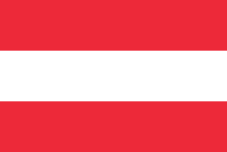
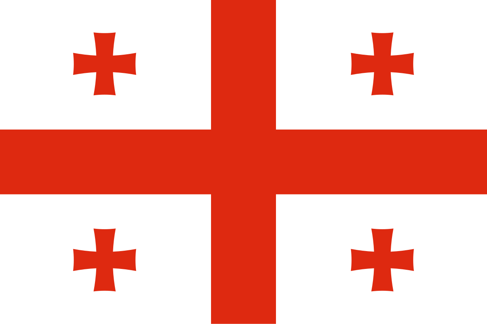

Австрія

Австрія - нейтральна держава у Центральній Європі. Межує з Німеччиною та Чехією на півночі, Швейцарією та Ліхтенштейном на заході, Словаччиною та Угорщиною на сході, Словенією та Італією на півдні. Одна із найбільш гірських країн Європи.
Вена Австрія — цікаві тури на протязі року.
Паспорт країни:
- Офіційна назва: Австрійська Республіка
- Площа: 83,9 тис. км2
- Кількість населення: 8,2 млн. осіб (2014)
- Густота населення: 99 осіб/км2
- Етнічний склад населення: австрійці - 91,1%, вихідці з Югославії - 4%, турки - 1,6%, німці - 0,9%
- Домінуюча релігія: католицизм. Релігійний склад: римо-католики – 73,6%, протестанти – 4,7%, мусульмани - 4,2%
- Офіційна мова: німецька
- Державний устрій: федеративний
- Форма державного правління: парламентсько-президентська республіка (президент обирає)
- Адміністративно-територіальний устрій: 8 федеральних земель
- Столиця: Відень (1,7 млн. осіб, 2012)
- Рівень урбанізації: 67%. Найбільші міста: Відень (1,7 млн. осіб), Грац (269 тис. осіб), Лінц (193 тис. осіб), Зальцбург (150 тис. осіб)
- ВВП: 361 млрд. дол. США (2013)
- ВВП на душу населення: 42600 дол. США (2013)
- Грошова одиниця: євро
- Місце в світі за Індексом розвитку людського потенціалу (ІРЛП): 21 (2014)
- Членство в міжнародних організаціях: ООН, ЄС, СОТ
- Державне свято: 26 жовтня (День проголошення нейтралітету, 1955). Рік здобуття незалежності - 1918
- Походження назви: від "остарріхі" (давньонім.) – східна країна
- Поетична назва: країна Моцарта і Віденського вальсу
Албанія
Албанія - країна на південному заході Балканського півострова. Межує з Чорногорією на півночі, Косово - на північному сході, Македонією - на сході. Має вихід до Адріатичного моря. І хоча назва країни означає "поселення, пристанище", самі албанці називають свою країну Шкіперією - на честь тюркського племені шкіперів.Тури в Албанію завжди можна придбати у Путівка.
Паспорт країни:
- Офіційна назва: Республіка Албанія
- Площа: 28,7 тис. км2
- Кількість населення: 3,0 млн. осіб (2014)
- Густота населення: 105 осіб/км2
- Етнічний склад населення: албанці - 95%, греки - 3%, інші - 2% (цигани, серби, македонці, болгари)
- Домінуюча релігія: іслам. Релігійний склад: мусульмани - 70%, православні - 20%, римо-католики - 10%
- Офіційна мова: албанська
- Державний устрій: унітарний
- Форма державного правління: парламентська республіка (президент обирається парламентом на 5 років)
- Адміністративно-територіальний устрій: 12 префектур, 6 округів
- Столиця: Тірана (419 тис. осіб, 2011)
- Рівень урбанізації: 53%. Найбільші міста: Тірана (419 тис. осіб), Вльора (134 тис. осіб), Дуррес (116 тис. осіб), Ельбасан (100 тис. осіб), Шкодер (96 тис. осіб), Корча (74 тис. осіб)
- ВВП: 28,3 млрд. дол. США (2013)
- ВВП на душу населення: 10700 дол. США (2013)
- Грошова одиниця: лек
- Місце в світі за Індексом розвитку людського потенціалу (ІРЛП): 95 (2014)
- Членство в міжнародних організаціях: ООН, НАТО, СОТ
- Державне свято: 28 листопада (День Незалежності). Рік здобуття незалежності - 1912
- Походження назви: від "олба" (іллір.) – поселення
Андорра
Андорра - найбільша із "карликових" держав Європи. Розташована у Східних Піренеях в долині річки Валіра, межує Францією на півночі та з Іспанією на півдні. Уряд країни - унікальне поєднання парламентських демократичних засад та сумісного правління двох князів - французького короля (тепер - президента) і єпископа Урхельського - представника Іспанії). Гірськолижні курорти в Андоррі — це яскраво і неповторно. Подорожуйте з Путівка.Паспорт країни:
- Офіційна назва: Князівство Андорра
- Площа: 468 км2
- Кількість населення: 85,5 тис. осіб (2014)
- Густота населення: 182 осіб/км2
- Етнічний склад населення: іспанці - 43%, андоррці - 33%, португальці - 11%, французи - 7%, інші - 6%
- Домінуюча релігія: католицизм. Релігійний склад: римо-католики – 91%, атеїсти – 6%
- Офіційна мова: каталанська
- Державний устрій: унітарний
- Форма державного правління: конституційна монархія (князівство)
- Адміністративно-територіальний устрій: 7 общин (приходів)
- Столиця: Андорра-ла-Велья (23,0 тис. осіб)
- Рівень урбанізації: 87,3%
- ВВП: 3,16 млрд. дол. США
- ВВП на душу населення: 37200 дол. США
- Грошова одиниця: євро
- Місце в світі за Індексом розвитку людського потенціалу (ІРЛП): 37 (2014)
- Членство в міжнародних організаціях: ООН, Латинський Союз, СОТ
- Державне свято: 8 вересня (День Богородиці Меритксельської). Рік утворення князівства - 1278
- Походження назви: від "андурріал" (баск.) – пустош
Болгарія
Болгарія - країна у південно-східній частині Балканського півострова. Межує на півночі з Румунією, на заході - з Сербією та Македонією, на півдні - з Грецією та Туреччиною. На сході має вихід до Чорного моря. В основі болгарського етносу - тюркомовні племена протоболгар, які прийшли із сходу Європи і були асимільовані місцевим слов'янським населенням. Сучасний член НАТО і ЄС, Болгарія довгий час підтримувала тісні зв'язки з колишнім СРСР, за що отримала в народі назву "16-ої республіки Радянського Союзу".Болгарія 2019 актуальні ціни і найкращі готелі з Путівка
Паспорт країни:
- Офіційна назва: Республіка Болгарія
- Площа: 110,9 тис. км2
- Кількість населення: 6,9 млн. осіб (2014)
- Густота населення: 62 особи/км2
- Етнічний склад населення: болгари - 76,9%, турки - 8,0%, цигани - 4,4%, інші - 10%
- Домінуюча релігія: православ'я. Релігійний склад: православні - 82,6%, мусульмани - 12,2%, інші християни - 1,2%, інші - 4%
- Офіційна мова: болгарська
- Державний устрій: унітарний
- Форма державного правління: парламентсько-президентська республіка (президент обирається строком на 5 років)
- Адміністративно-територіальний устрій: 28 провінцій
- Столиця: Софія (1,3 млн. осіб, 2014)
- Рівень урбанізації: 73%. Найбільші міста: Софія (1,3 млн. осіб), Пловдів (367 тис. осіб), Варна (357 тис. осіб), Бургас (206 тис. осіб)
- ВВП (за ПКС): 104,6 млрд. дол. США
- ВВП на душу населення: 14400 дол. США
- Грошова одиниця: лев
- Місце в світі за Індексом розвитку людського потенціалу (ІРЛП): 58 (2014)
- Членство в міжнародних організаціях: ООН, ЄС, НАТО, СОТ
- Державне свято: 3 березня (День Визволення від османського іга). Рік здобуття незалежності - 1908
- Походження назви: за етнонімом народу - болгари
- Поетична назва: країна троянд
Велика Британія
Велика Британія - держава на заході Європи, розташована на Британських островах (Великобританія, Ірландія, Мен, Оркнейські-о-ви, Шетландські о-ви тощо). Від материкової Європи відокремлена протокою Ла-Манш. Сухопутний кордон має лише з Ірландією. Одна із найбільш економічно-розвинутих країн Європи та світу, член "великої сімки". Ще у кінці 19-го століття британська колоніальна імперія, над якою ніколи не заходило Сонце, була найбільшою в світі. Сьогодні Велика Британія та її колишні колонії утворюють Британську Співдружність націй (Commonwealth).Екскурсійний тур в Лондон Великобританія з Путівка — це цікаво і доступно.
Паспорт країни:
- Офіційна назва: Сполучене Королівство Великої Британії та Північної Ірландії
- Площа: 244,7 тис. км2
- Кількість населення: 63,7 млн. осіб (2014)
- Густота населення: 260 осіб/км2
- Етнічний склад населення: англійці - 83,6%, шотландці - 8,6%, валлійці - 4,9%, північні ірландці - 2,9%, африканці - 2,0%, індуси - 1,8%, пакистанці - 1,3%
- Домінуюча релігія: християнство. Релігійний склад: англікани, римо-католики, пресвітеріани, методисти - 71.6%, мусульмани - 2.7%, індуїсти - 1%, інші - 1.6%, атеїсти - 23.1%
- Офіційна мова: англійська, також існують офіційні регіональні мови: в Уельсі - валлійська; в Шотландії - шотладдська та шотландська гельська, в Північній Ірландії - ірландська; в графстві Корнуоллі - корнська
- Державний устрій: унітарний; однак історичні землі Англія, Шотландія, Уельс, Північна Ірландія мають певну автономію у вирішенні внутрішніх питань
- Форма державного правління: конституційна монархія
- Адміністративно-територіальний устрій: Англія (39 графств, 6 метрополітенівських графств, Великий Лондон), Уельс (8 графств), Шотландія (9 районів та острівна територія), Північна Ірландія (26 округів), острів Мен, Нормандські острови
- Столиця: Лондон (8,4 млн. осіб, 2013)
- Рівень урбанізації: 80%. Найбільші міста: Лондон (8,4 млн. осіб), Манчестер (503 тис.осіб, агломерація - 2,2 млн. осіб), Бірмінгем (1,1 млн. осіб), Лідс (758 тис. осіб), Глазго (581 тис. осіб)
- ВВП: 2387 млрд. дол. США (2013)
- ВВП на душу населення: 37300 дол. США (2013)
- Грошова одиниця: фунт стерлінгів
- Місце в світі за Індексом розвитку людського потенціалу (ІРЛП): 14 (2014)
- Членство в міжнародних організаціях: ООН, ЄС, НАТО, СОТ, ОЄСР, Британська Співдружність
- Державне свято: День народження королеви. Незалежна - з 10 століття, у сучасних межах - з 1927 року
- Походження назви: "британія" - від германського племені бриттів
- Поетична назва: туманний Альбіон
Греція
Греція - держава на півдні Європи, у східній акваторії Середземного моря, охоплює південь Балканського півострова, зокрема півострів Пелопоннес, а також ряд островів. Є спадкоємицею давньогрецької античної держави та її цивілізаційних здобутків. У 19 столітті отримала незалежність від Османської імперії. На півночі межує з Албанією, Македонією, Болгарією, на сході - із Туреччиною. Омивається Середземним морем: на заході Іонічним, на сході - Егейським морями.Острова Греції, їх неймовірні пляжі і захоплюючі краєвиди Ви можете відвідати разом із Путівка
Паспорт країни:
- Офіційна назва: Греція (Еллінська республіка)
- Площа: 131,9 тис. км2
- Кількість населення: 10,8 млн. осіб (2014)
- Густота населення: 82 особи/км2
- Етнічний склад населення: греки - 98%, інші - 2%
- Домінуюча релігія: православ'я. Релігійний склад: православні - 98%, мусульмани - 1,3%, інші - 0,7%
- Офіційна мова: новогрецька
- Державний устрій: унітарний
- Форма державного правління: парламентська республіка (президент обирається парламентом на 5 років)
- Адміністративно-територіальний устрій: 51 префектура і 1 автономний регіон
- Столиця: Афіни (3,4 млн.осіб, 2011)
- Рівень урбанізації: 61%. Найбільші міста: Афіни (агломерація - 3,4 млн.осіб), Салоніки (322 тис. осіб), Патри (115 тис. осіб), Лариса (131 тис. осіб)
- ВВП: 267,1 млрд. дол. США (2013)
- ВВП на душу населення: 33600 дол. США (2013)
- Грошова одиниця: євро
- Місце в світі за Індексом розвитку людського потенціалу (ІРЛП): 29 (2014)
- Членство в міжнародних організаціях: ООН, ЄС, НАТО, СОТ
- Державне свято: 25 березня (День Незалежності). Рік здобуття незалежності - 1829
- Походження назви: від етноніму народу - греками у давнину називали іллірійську народність, сучасні греки називають себе еллінами
- Поетична назва: Еллада
Грузія

Грузія - держава в західній частині Закавказзя на східному узбережжі Чорного моря. Межує з Вірменією і Туреччиною на півдні, Азербайджаном на південному-сході і Росією на півночі. Самі грузини називають свою країну Сакартвелло, а назва Грузії походить від імені її покровителя - Святого Георгія. Країна відома на весь світ своїми винами, мінеральними водами та неабиякою привітністю та харизмою її жителів.Тури в Грузію з Путівка - це незабутні враження від поєднання комфорту, моря, гір і теплого клімату.
Паспорт країни:
- Офіційна назва: Республіка Грузія
- Площа: 69,7 тис. км2
- Кількість населення: 4,6 млн. осіб (2010)
- Густота населення: 66 осіб/км2
- Етнічний склад населення: грузини - 83,7%, азербайджанці - 6,5%, вірмени - 5,7%, росіяни - 1,5%, осетини - 0,9%, курди і єзіди - 0,5%, греки - 0,3%, чеченці - 0,2%, українці - 0,2%
- Домінуюча релігія: православ'я. Релігійний склад населення: православні - 83,9%, мусульмани - 9,9%, вірмено-грегоріанці - 3,9%, католики - 0,8%, інші - 0,8%, атеїсти - 0,7%
- Офіційна мова: грузинська
- Державний устрій: унітарний
- Форма державного правління: президентсько-парламентська республіка
- Адміністративно-територіальний устрій: 9 країв (Самегрело, Рача-Лечхумі — Нижня Сванетія, Гурія, Імереті, Самцхе-Джавахеті, Шида Картлі, Квемо Картлі, Мцхета-Мтіанеті, Кахеті), 2 міста республіканського підпорядкування (Тбілісі та Поті) та 2 автономні республіки (Абхазія та Аджарія)
- Столиця: Тбілісі (1,15 млн. осіб, 2010)
- Рівень урбанізації: 53%. Найбільші міста: Кутаїсі (188,6 тис. осіб), Руставі (180,3 тис. осіб), Батумі (122 тис. осіб), Зугдіді (76 тис. осіб), Поті (70 тис. осіб), Горі (50 тис. осіб), Сухумі (43,7 тис. осіб), Цхінвалі (42,3 тис. осіб)
- ВВП на душу населення (за ПКС): 4400 дол. США
- Грошова одиниця: ларі
- Місце в світі за Індексом розвитку людського потенціалу (ІРЛП): 75 (2011)
- Членство в міжнародних організаціях: ООН, ОБСЄ, СОТ, ГУАМ, ОЧЕС, ЄБРР, МВФ
- Державне свято: 26 травня (День незалежності (від Росії, 1918). Рік здобуття незалежності: 1991 (незалежність після розпаду СРСР)
- Походження назви: від імені покровителя Грузії - Святого Георгія, грузини називають себе картвелами, а свою країну Сакартвело
Домініканo

Тури в Домінікану з Путівка - це найкращий варіант для тих, хто шукає комфортні умови і хороші враження.
Паспорт країни:
Єгипет

Тури в Єгипет по найкращим цінам, на любий смак і вимоги з Путівка